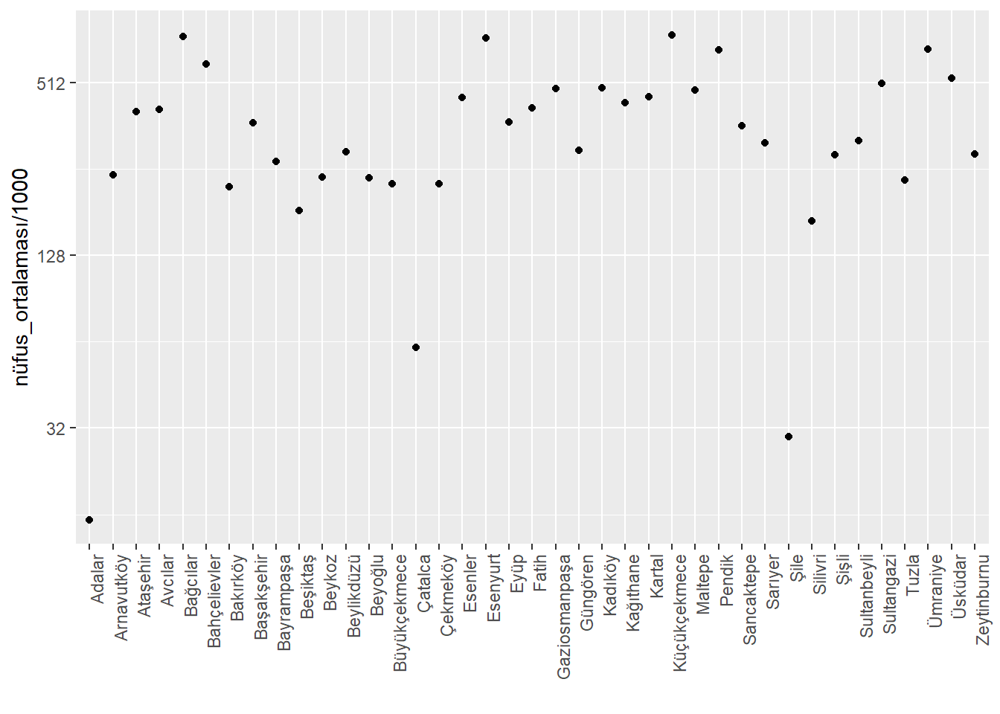
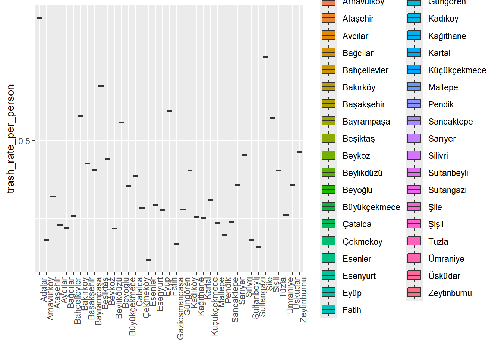
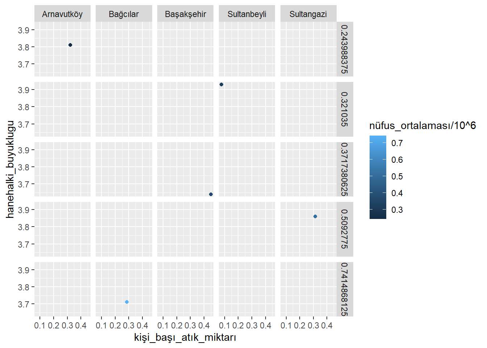
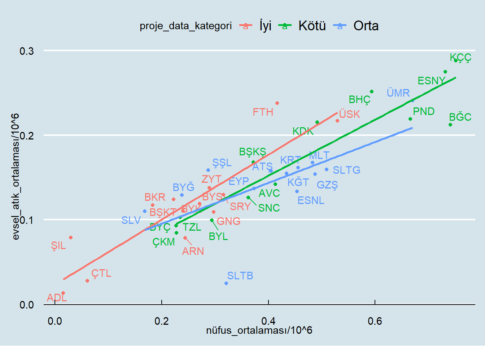
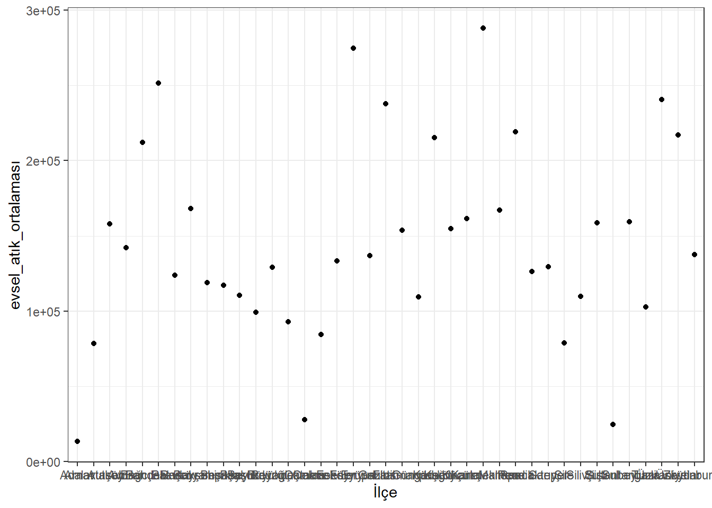
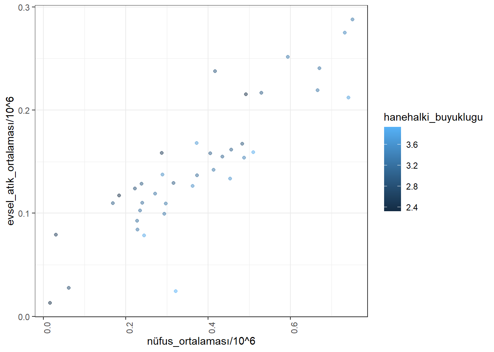

library(readxl)
library(ggplot2)
library(dplyr)
Attaching package: 'dplyr'The following objects are masked from 'package:stats':
filter, lagThe following objects are masked from 'package:base':
intersect, setdiff, setequal, unionlibrary(tidyr)
library(stringr)
library(scales)
library(plotly)
Attaching package: 'plotly'The following object is masked from 'package:ggplot2':
last_plotThe following object is masked from 'package:stats':
filterThe following object is masked from 'package:graphics':
layoutlibrary(ggrepel)
library(ggthemes)
path = getwd()
nüfus_path <- "nufuslar.xlsx"
nüfus_data <- read_excel(nüfus_path)
head(nüfus_data)# A tibble: 6 × 17
İlçe `2008` `2009` `2010` `2011` `2012` `2013` `2014` `2015` `2016` `2017`
<chr> <dbl> <dbl> <dbl> <dbl> <dbl> <dbl> <dbl> <dbl> <dbl> <dbl>
1 Adalar 14072 14341 14221 13883 14552 16166 16052 15623 14478 14907
2 Arnavut… 156333 168121 180080 190247 198165 215531 225670 236222 247507 261655
3 Ataşehir 351046 361615 375208 387502 395758 405974 408986 419368 422513 423372
4 Avcılar 333944 348635 364682 383736 395274 407240 417852 425228 430770 435682
5 Bağcılar 720819 724268 738809 746650 749024 752250 754623 757162 751510 748483
6 Bahçeli… 571683 576799 590063 600900 600162 602931 599027 602040 598097 598454
# ℹ 6 more variables: `2018` <dbl>, `2019` <dbl>, `2020` <dbl>, `2021` <dbl>,
# `2022` <dbl>, `2023` <dbl>nüfus_data <- nüfus_data |> pivot_longer('2008':'2023', names_to = 'yıl', values_to = 'nüfus')
head(nüfus_data)# A tibble: 6 × 3
İlçe yıl nüfus
<chr> <chr> <dbl>
1 Adalar 2008 14072
2 Adalar 2009 14341
3 Adalar 2010 14221
4 Adalar 2011 13883
5 Adalar 2012 14552
6 Adalar 2013 16166str(nüfus_data)tibble [624 × 3] (S3: tbl_df/tbl/data.frame)
$ İlçe : chr [1:624] "Adalar" "Adalar" "Adalar" "Adalar" ...
$ yıl : chr [1:624] "2008" "2009" "2010" "2011" ...
$ nüfus: num [1:624] 14072 14341 14221 13883 14552 ...# İlçeye göre ortalama nüfusları tablo şeklinde gösterilim
nüfus_data$yıl <- as.numeric(nüfus_data$yıl)
nüfus_data$nüfus <- as.numeric(nüfus_data$nüfus)
ilçe_nüfus_ortalama <- nüfus_data |>
group_by(İlçe) |>
summarise(nüfus_ortalaması = mean(nüfus))
print(ilçe_nüfus_ortalama)# A tibble: 39 × 2
İlçe nüfus_ortalaması
<chr> <dbl>
1 Adalar 15317
2 Arnavutköy 243988.
3 Ataşehir 405139.
4 Avcılar 413236.
5 Bahçelievler 594071.
6 Bakırköy 222437.
7 Bayrampaşa 271292.
8 Bağcılar 741487.
9 Başakşehir 371738.
10 Beykoz 239655.
# ℹ 29 more rows# İlçeye göre ortalama nüfusları grafik şeklinde gösterilim
ilçe_ortalama_plot <- ggplot(ilçe_nüfus_ortalama, aes(x =İlçe, y=nüfus_ortalaması/1000)) + geom_point() + theme(axis.text.x = element_text(angle = 90, hjust = 1)) + xlab(" ") + scale_y_continuous(trans = "log2")
# İlçeye göre çöp tüketim verisini birleştirelim
evsel_atık_path <- "evsel_atik.xlsx"
evsel_atık_data <- read_excel(evsel_atık_path)
evsel_atık_data <- evsel_atık_data |> pivot_longer('2008':'2023', names_to = 'yıl', values_to = 'evsel_atık')
head(evsel_atık_data)# A tibble: 6 × 3
İlçe yıl evsel_atık
<chr> <chr> <dbl>
1 Adalar 2008 12232
2 Adalar 2009 13228
3 Adalar 2010 11884.
4 Adalar 2011 12109.
5 Adalar 2012 12077
6 Adalar 2013 12886 str(evsel_atık_data)tibble [624 × 3] (S3: tbl_df/tbl/data.frame)
$ İlçe : chr [1:624] "Adalar" "Adalar" "Adalar" "Adalar" ...
$ yıl : chr [1:624] "2008" "2009" "2010" "2011" ...
$ evsel_atık: num [1:624] 12232 13228 11884 12109 12077 ...evsel_atık_data[evsel_atık_data == 0] <- NA
ilçe_atık_ortalama <- evsel_atık_data |>
group_by(İlçe) |>
summarise( evsel_atık_ortalaması = mean(evsel_atık, na.rm = TRUE))
print(ilçe_atık_ortalama)# A tibble: 39 × 2
İlçe evsel_atık_ortalaması
<chr> <dbl>
1 Adalar 13250.
2 Arnavutköy 78419.
3 Ataşehir 157869.
4 Avcılar 142046.
5 Bahçelievler 251647.
6 Bakırköy 123939.
7 Bayrampaşa 119017.
8 Bağcılar 212092.
9 Başakşehir 168045.
10 Beykoz 110291.
# ℹ 29 more rowsilçe_nüfus_ortalama %>% arrange(desc(nüfus_ortalaması)) %>% head()# A tibble: 6 × 2
İlçe nüfus_ortalaması
<chr> <dbl>
1 Küçükçekmece 751196.
2 Bağcılar 741487.
3 Esenyurt 732204.
4 Ümraniye 670082.
5 Pendik 665999.
6 Bahçelievler 594071.ilçe_atık_ortalama %>% arrange(desc(evsel_atık_ortalaması)) %>% head()# A tibble: 6 × 2
İlçe evsel_atık_ortalaması
<chr> <dbl>
1 Küçükçekmece 288031.
2 Esenyurt 274772.
3 Bahçelievler 251647.
4 Ümraniye 240612.
5 Fatih 237674.
6 Pendik 219020.proje_data <- left_join(ilçe_nüfus_ortalama, ilçe_atık_ortalama, by = "İlçe")
proje_data <- proje_data %>% mutate(kişi_başı_atık_miktarı = evsel_atık_ortalaması/nüfus_ortalaması)
p1 <- proje_data %>% ggplot() + theme(axis.text.x = element_text(angle = 90, hjust = 1)) + xlab(" ") + scale_y_continuous(trans = "log2")
p1 + geom_point(aes(İlçe, kişi_başı_atık_miktarı, fill = factor(İlçe))) 
su_tüketim_path <- "su_tuketim.xlsx"
su_tüketim_data <- read_excel(su_tüketim_path)
head(su_tüketim_data)# A tibble: 6 × 10
İlçe `2015` `2016` `2017` `2018` `2019` `2020` `2021` `2022` `2023`
<chr> <dbl> <dbl> <dbl> <dbl> <dbl> <dbl> <dbl> <dbl> <dbl>
1 Adalar 1432494 1.47e6 1.37e6 1.40e6 1.37e6 1.51e6 1.44e6 1.54e6 1.41e6
2 Arnavutköy 8002123 9.18e6 1.02e7 1.14e7 1.38e7 1.56e7 1.71e7 1.89e7 2.09e7
3 Ataşehir 18597049 2.00e7 2.12e7 2.15e7 2.24e7 2.37e7 2.43e7 2.44e7 2.48e7
4 Avcılar 16220476 1.71e7 1.76e7 1.83e7 1.95e7 2.08e7 2.07e7 2.16e7 2.17e7
5 Bağcılar 9915435 1.08e7 1.12e7 1.22e7 1.36e7 1.60e7 1.62e7 1.74e7 1.83e7
6 Bahçelievler 23610609 2.43e7 2.49e7 2.62e7 2.78e7 2.90e7 2.77e7 2.92e7 2.88e7su_tüketim_data <- su_tüketim_data |> pivot_longer('2015':'2023', names_to = 'yıl', values_to = 'su_tüketim')
ilçe_su_ortalama <- su_tüketim_data |>
group_by(İlçe) |>
summarise( su_tüketim_ortalaması = mean(su_tüketim, na.rm = TRUE))
proje_data <- left_join(proje_data, ilçe_su_ortalama[, c("İlçe", "su_tüketim_ortalaması")], by = "İlçe")
proje_data <- proje_data %>% mutate(kişi_başı_su_tüketim_miktarı = su_tüketim_ortalaması/nüfus_ortalaması)
dogalgaz_tüketim_path <- "dogalgaz_tuketim.xlsx"
dogalgaz_tüketim_data <- read_excel(dogalgaz_tüketim_path)
dogalgaz_tüketim_data <- dogalgaz_tüketim_data %>% group_by(İlçe,Yıl) %>% summarise(yıllık_tüketim= sum(`Dogalgaz Tüketim Miktarı (m3)`))`summarise()` has grouped output by 'İlçe'. You can override using the
`.groups` argument.dogalgaz_tüketim_data <- dogalgaz_tüketim_data %>%
filter(Yıl != 2023)
ilçe_dogalgaz_ortalama <- dogalgaz_tüketim_data |>
group_by(İlçe) |>
summarise( dogalgaz_tüketim_ortalaması = mean(yıllık_tüketim, na.rm = TRUE))
proje_data <- left_join(proje_data, ilçe_dogalgaz_ortalama[, c("İlçe", "dogalgaz_tüketim_ortalaması")], by = "İlçe")
proje_data <- proje_data %>% mutate(kişi_başı_dogalgaz_tüketim_miktarı = dogalgaz_tüketim_ortalaması/nüfus_ortalaması)
okuma_yazma_orani_path <- "okuma_yazma_orani.xlsx"
okuma_yazma_orani_data <- read_excel(okuma_yazma_orani_path)
okuma_yazma_orani_data <- okuma_yazma_orani_data %>% mutate(okuma_yazma_oranı = `Okuma Yazma Bilen`/(`Okuma Yazma Bilmeyen`+`Okuma Yazma Bilen`)*100)
proje_data <- left_join(proje_data, okuma_yazma_orani_data[, c("İlçe", "okuma_yazma_oranı")], by = "İlçe")
teknolojik_erisim_path <- "teknolojik_erisim.xlsx"
teknolojik_erisim_data <- read_excel(teknolojik_erisim_path)
head(teknolojik_erisim_data)# A tibble: 6 × 11
İlçe Kendi kendine ev süp…¹ Ücretli TV yayını (D…² TV Dijital platformu…³
<chr> <dbl> <dbl> <dbl>
1 Adalar 45 23 79
2 Arnavutk… 223 77 67
3 Ataşehir 60 366 459
4 Avcılar 135 368 419
5 Bağcılar 106 170 212
6 Bahçelie… 336 641 527
# ℹ abbreviated names: ¹`Kendi kendine ev süpüren robot elektrik süpürgesi`,
# ²`Ücretli TV yayını (Digiturk, DSmart, Tivibu vb.)`,
# ³`TV Dijital platformu (Netflix, BluTV, Exxen vb.)`
# ℹ 7 more variables: `Dizüstü bilgisayar` <dbl>, Tablet <dbl>,
# `Masaüstü bilgisayar` <dbl>, `Playstation/Xbox/Wii oyun platformu` <dbl>,
# `İnternet bağlantısı` <dbl>, `Alarm (Yangın)` <dbl>, Hiçbiri <dbl>#tek veriye indirgeme
sütun_ortalamaları <- sapply(teknolojik_erisim_data[,-1],mean)
toplam_ortalama <- sum(sütun_ortalamaları)
katsayı = 1/(sütun_ortalamaları/toplam_ortalama)
katsayı[10] <- katsayı[10]*(-3)
teknolojik_erisim_data$teknolojik_erisim_degeri <- rowSums(teknolojik_erisim_data[,-1]*katsayı)
teknolojik_erisim_data <- teknolojik_erisim_data %>%
mutate(teknolojik_erisim_degeri_normalize = (teknolojik_erisim_degeri - min(teknolojik_erisim_degeri)) / max(teknolojik_erisim_degeri))
proje_data <- left_join(proje_data, teknolojik_erisim_data[, c("İlçe", "teknolojik_erisim_degeri_normalize")], by = "İlçe")
mulkiyet_durumu_path <- "mulkiyet_durumu.xlsx"
mulkiyet_durumu_data <- read_excel(mulkiyet_durumu_path)
mulkiyet_durumu_data <- mulkiyet_durumu_data %>% mutate(ev_sahiplik_oranı = `Ev Sahibi`/(`Ev Sahibi`+`Ev Sahibi Değil`)*100)
proje_data <- left_join(proje_data, mulkiyet_durumu_data[, c("İlçe", "ev_sahiplik_oranı")], by = "İlçe")
#ilçelere kısaltma ekleyelim
proje_data$ilçe_kısaltma <- toupper(substring(abbreviate(proje_data$İlçe, minlength=3),1,4))Warning in abbreviate(proje_data$İlçe, minlength = 3): abbreviate used with
non-ASCII chars
Warning in abbreviate(proje_data$İlçe, minlength = 3): abbreviate used with
non-ASCII chars
Warning in abbreviate(proje_data$İlçe, minlength = 3): abbreviate used with
non-ASCII chars#aynı kısaltmaları düzeltme
proje_data[proje_data$İlçe == "Sultangazi", "ilçe_kısaltma"] <- "SLTG"
proje_data[proje_data$İlçe == "Sultanbeyli", "ilçe_kısaltma"] <- "SLTB"
ikamet_suresi_path <- "ikamet_suresi.xlsx"
ikamet_suresi_data <- read_excel(ikamet_suresi_path)
ikamet_suresi_data <- ikamet_suresi_data %>% rename(ortalama_ikamet_suresi=`Ortalama Yıl`)
proje_data <- left_join(proje_data, ikamet_suresi_data[, c("İlçe", "ortalama_ikamet_suresi")], by = "İlçe")
hanehalki_buyukluk_path <- "hanehalki_buyukluk.xlsx"
hanehalki_buyukluk_data <- read_excel(hanehalki_buyukluk_path)
hanehalki_buyukluk_data <- hanehalki_buyukluk_data %>% rename(hanehalki_buyuklugu=`Ortalama Hanehalkı Büyüklüğü 2022`)
proje_data <- left_join(proje_data, hanehalki_buyukluk_data[, c("İlçe", "hanehalki_buyuklugu")], by = "İlçe")
#korelasyon matrisi çizdirme 1
cor_data <- proje_data[,c("kişi_başı_atık_miktarı", "kişi_başı_su_tüketim_miktarı", "kişi_başı_dogalgaz_tüketim_miktarı", "okuma_yazma_oranı","teknolojik_erisim_degeri_normalize","ev_sahiplik_oranı","ortalama_ikamet_suresi","hanehalki_buyuklugu")]
corr_matrix <- cor(cor_data, use="complete.obs")
library(corrplot)corrplot 0.92 loadedc1 <- corrplot(corr_matrix, method = "circle")
#korelasyon matrisi çizdirme 2
library(plotly)
c2 <- plot_ly(z = corr_matrix, type = "heatmap")
print(c2)
#Grafikler
x <- proje_data %>% arrange(desc(nüfus_ortalaması))%>% top_n(5)Selecting by hanehalki_buyukluguproje_data %>% filter(İlçe %in% x$İlçe) %>% ggplot(aes(kişi_başı_atık_miktarı, hanehalki_buyuklugu,
color = nüfus_ortalaması/10^6)) + geom_point() +
facet_grid(nüfus_ortalaması/10^6 ~ İlçe)
proje_data_kategori <- ntile(proje_data$ortalama_ikamet_suresi, 3)
proje_data_kategori <- recode(proje_data_kategori,
'1' = 'Kötü',
'2' = 'Orta',
'3' = 'İyi')
proje_data |> ggplot(aes(nüfus_ortalaması/10^6,
evsel_atık_ortalaması/10^6, label = ilçe_kısaltma, color= proje_data_kategori)) + geom_point() +
geom_text_repel() +
geom_smooth(method = "lm"
, se = FALSE) + theme_economist()`geom_smooth()` using formula = 'y ~ x'Warning: The following aesthetics were dropped during statistical transformation: label.
ℹ This can happen when ggplot fails to infer the correct grouping structure in
the data.
ℹ Did you forget to specify a `group` aesthetic or to convert a numerical
variable into a factor?
proje_data %>% ggplot(aes(İlçe, evsel_atık_ortalaması)) + geom_point() + theme_bw()
proje_data %>% ggplot(aes(nüfus_ortalaması/10^6,
evsel_atık_ortalaması/10^6)) + geom_jitter(aes(color
= hanehalki_buyuklugu), alpha = 0.5) + theme_bw()+ theme(axis.text.x = element_text(angle = 90, hjust = 1))